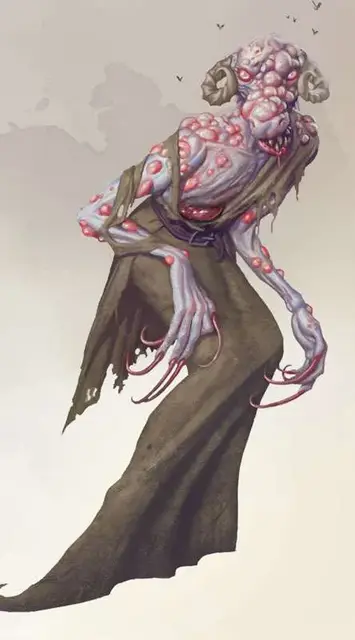

Ойнолот
Oinoloth
Среднее Исчадие (Юголот), нейтрально-злое

Класс Доспеха 17 (природный доспех)
Хиты 126 (12к10 + 60)
Скорость 40 футов
| мод | спас | ||
|---|---|---|---|
| СИЛ | 19 | +4 | +4 |
| ЛОВ | 17 | +3 | +3 |
| ТЕЛ | 18 | +4 | +8 |
| мод | спас | ||
|---|---|---|---|
| ИНТ | 17 | +3 | +3 |
| МДР | 16 | +3 | +7 |
| ХАР | 19 | +4 | +4 |
Навыки Восприятие +7, Запугивание +8, Обман +8
Сопротивление урону огонь, холод, электричество; дробящий, колющий, рубящий от немагических атак
Иммунитет к урону кислота, яд
Иммунитет к состояниям отравление
Чувства слепое зрение 60 футов, тёмное зрение 60 футов, пассивное Восприятие 17
Языки Бездны, Инфернальный, Телепатия 60 фт.
Опасность 12 (8400 опыта)
Бонус мастерства +4
Среда обитания Подземье, Арктика
Особенности
Сопротивление магии. Ойнолот совершает с преимуществом спасброски от заклинаний и прочих магических эффектов.
Магическое оружие. Атаки оружием ойнолота являются магическими.
Врождённое колдовство. Базовой характеристикой ойнолота является Харизма (Сл спасброска от заклинания 16). Он может накладывать следующие заклинания, не нуждаясь в материальных компонентах:
• Неограниченно: тьма [darkness], обнаружение магии [detectmagic], рассеивание магии [dispel magic], невидимость (только на себя) [invisibility]
• 1/день каждое: слабоумие [feeblemind], сфера неуязвимости [globe of invulnerability], огненная стена [wall of fire], ледяная стена [wall of ice]
Вестник чумы (перезарядка 5-6). Бонусным действием ойнолот заражает пространство в пределах 30 футов от себя. Заражение длится 24 часа. Пока длится заражение, все обычные растения в области чахнут и умирают, а количество хитов, восстанавливаемых заклинаниями уменьшается вдвое.
Также, когда существо двигается через заражённую область или начинает в ней ход, оно должно пройти спасбросок Телосложения Сл 16. В случае успеха существо становится не восприимчивым к особенности Вестник Чумы на следующие 24 часа. В случае провала оно получает 14 (4к6) урона некротической энергией и становится отравленным.
Отравленное существо не может восстанавливать хиты. Через каждые 24 часа оно может повторять спасбросок. В случае провала максимальное значение хитов существа уменьшается на 5 (1к10). Это понижение длится до завершения отравления, кроме того, цель погибает, если его максимальное значение хитов становится равным 0. Отравление проходит после того, как существо трижды преуспеет в спасброске.
Действия
Мультиатака. Ойнолот использует пронзающий взгляд и совершает две атаки когтями.
Когти. Рукопашная атака оружием: +8 к попаданию, досягаемость 5 футов, одна цель. Попадание: 14 (3к6 + 4) рубящего урона, плюс 22 (4к10) урона некротической энергией.
Испорченное исцеление (перезарядка 6). Ойнолот прикасается к одному добровольному существу в пределах 5 футов от себя. Цель восстанавливает все свои хиты. Помимо этого, ойнолот может завершить действие одной болезни на цели, или устранить один из эффектов: ослеплён, оглушён, парализован или отравлен. После этого цель получает 1 уровень Истощения, а его максимальное значение хитов уменьшается на 7 (2к6). Ослабления могут быть устранены только заклинанием желание, или трижды сотворённым в течение часа заклинанием высшее восстановление [greater restoration]. Цель погибает, если максимальное значение его хитов опустится до 0.
Телепортация. Ойнолот магическим образом телепортируется вместо со всем снаряжением, которое он несёт или носит, в свободное пространство в пределах 60 футов от себя, которое он может видеть.
Пронзающий взгляд. Ойнолот выбирает целью одно существо, которое он может видеть в пределах 30 футов от себя. Цель должна преуспеть в спасброске Мудрости Сл 16 против этой способности, иначе станет очарованной до конца следующего хода ойнолота. Очарованная таким образом цель становится удерживаемой. Если спасбросок цели успешен, она становится невосприимчивой к пронзающему взгляду ойнолота на следующие 24 часа.
Описание
Мрачные призраки смерти, ойнолоты несут чуму, куда бы они ни шли. Одно их простое появления заставляет солдат грозных армий оказаться сломленными духом и бежать, чтобы не поддаться одной из ужасных хворей, что источают ойнолоты.
Ойнолоты предоставляют окончательное решение трудных вопросов, как правило, убивая всех, кто замешан в этом. Их нанимают как крайнюю меру, когда осада проходит слишком долго или армия врага слишком сильна, чтобы её победить. Будучи призванными, ойнолоты скрываются на полях боя, отравляя землю и заражая встречных существ. Иногда их нанимают для борьбы с заражением, которую они сами распространили, но цена подобной работы весьма велика, а спасённые их силами существа превращаются в обессиливших.